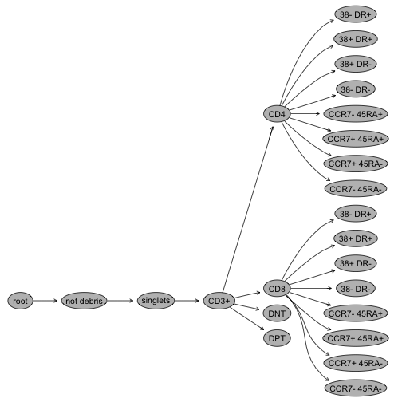
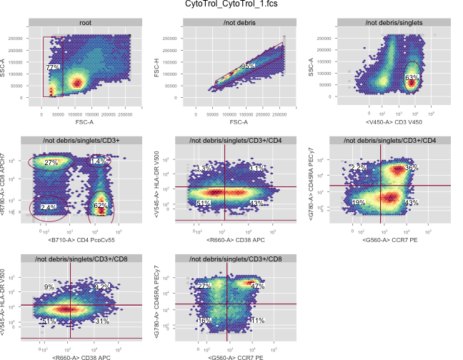
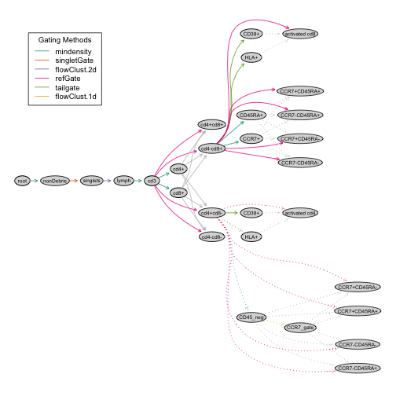
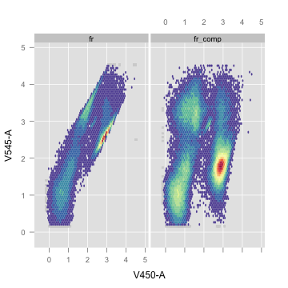
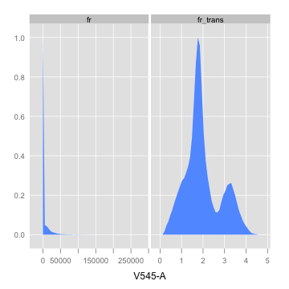
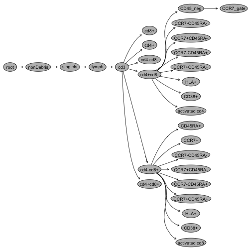
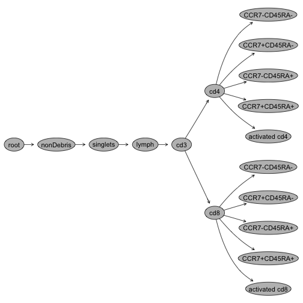
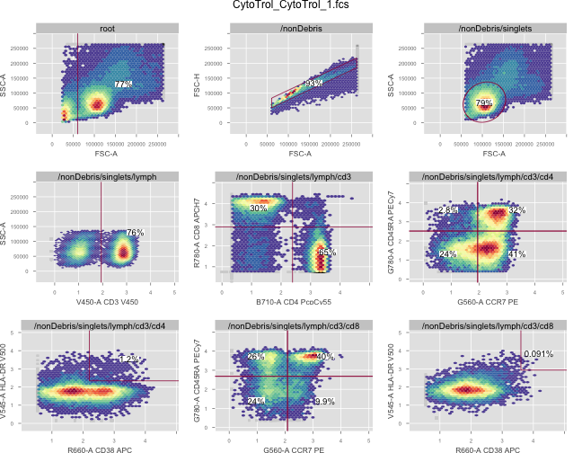

An Introduction to the OpenCyto Framework
The OpenCyto framework is a collection of BioConductor packages built to provide the necessary infrastructure for flow cytometry data analysis.
These packages include:
flowCore is the core infrastructure pacakge for reading FCS files.
flowViz handles visualization of FCS data, cell populations, and gates.
flowStats provides some statistical methods for performing flow data normalization and gating.
ncdfFlow implements an HDF5 back-end compatible with NetCDF (Network Common Data Format) files, allowing the core flow packages to handle large data sets without requiring large amounts of RAM.
flowWorkspace implements the GatingHierarchy and GatingSet data structures, which represent gated cell populations and the hierarchical relationships between them. It also implements parsers for FlowJo workspace files, allowing manually gated data to be imported into R and the analysis reproduced.
The openCyto package abstracts away the data and allows users to specify gating templates by defining trees of cell populations, markers, and the gating algorithms used to identify them. Gates themselves are defined in a data-driven manner once the template is applied to a data set.
When data are well-standardized (i.e. have consistent staining panels, and consistent naming of markers and channels), OpenCyto templates are reusable. Once defined for a particular staining panel, they can be reused on other data sets using the same panel, naming schemes, reagents, and so forth.
We’ll show how OpenCyto can be used to import manual gates from a FlowJo workspace and perform some visualization.
Then we’ll generate a gating template to reproduce the manual analysis and visualize those results.
Manual gating
Traditional gating is performed by manual inspection of pairwise dotplots. Gates are drawn by and using tools like FlowJo.
Alternately, when data are well-standardized, analysts may create a set of ‘template gates’ based on the distribution of the data in one sample, and then copy these gates over to the other samples in a data set. These gates generally need to be manually inspected to ensure that they have correct placement on all samples and cell populations.
Both these approaches are time-consuming and subjective, and generally sub-optimal for analyzing large, high-throughput data sets such as those encountered in clinical research, or coming from new single-cell technologies like CyTOF (Mass Cytometry Time of Flight).
Manual gatig is also frought with problems when data are generated and analyzed at different centers (as sometimes happens in clinical trials), and the results need to be compared. Large center-to-center variability as well as bias complicated the detection of significant biological signal.
Importing a FlowJo Workspace
FlowJo stores a data analysis as a worksapce, which is just an XML document that describes the different parts of an analysis performed on a set of data; everything from compensation and transformation, to gating, and how the data are to be displayed, is represented in the workspace file.
The flowWorkspace package implements several parsers for FlowJo workspaces and supports most Windows and Mac versions of FlowJo, as well as the new cross-platform version X. The package imports the transformations, compensation, and gates, reproducing them as native R objects.
Here is one xml workspace from FlowJo, defining a manual gating scheme for a sample stained with a panel of T-cell markers.
flowDataPath <- system.file("extdata", package = "flowWorkspaceData")
wsfile <- list.files(flowDataPath, pattern = "manual.xml", full = TRUE)
## [1] "manual.xml"
Using the flowWorkspace package, we open the workspace in R.
ws <- openWorkspace(wsfile)
print(ws)
We see that ws is a flowJoWorksapce object, with different groups of samples defined in it.
We call the parseWorkspace method to read the raw FCS files and apply all the compensation, transformation, and gates defined in the xml for the "T-cell" group of samples.
gs <- parseWorkspace(ws, name = "T-cell", subset = 1, isNcdf = TRUE)
We now have an entire FlowJo data analysis available to us in R, including all the event-level data, not just the statistics.gs is a GatingSet object that represents the gating hierarchy of populations.
We can visualize a Gating Hierarchy (one FCS file) from this set.
gh <- gs[[1]]
plot(gh)

Specific cell populations and gates can be viewed as well, by referring to them by name (e.g. "CD3"), or we can just view the entire layout.
plotGate(gh)

The above plot shows the gating scheme for one sample from the T cell staining panel. If we’d like to extract the data for downstream analysis, this is also straightforward.
head(getPopStats(gs, satistic = "count"))
## CytoTrol_CytoTrol_1.fcs
## /not debris 0.76733
## /not debris/singlets 0.94878
## /not debris/singlets/CD3+ 0.62837
## /not debris/singlets/CD3+/CD4 0.62470
## /not debris/singlets/CD3+/CD4/38+ DR+ 0.03077
## /not debris/singlets/CD3+/CD4/38+ DR- 0.43088
The above gives us the counts. By substituting statistic="freq", we get the proportions. If we want the statistics that were computed by FlowJo, we pass flowJo=TRUE.
It’s not unusual for these to differ by a few cells. However, if they are vastly different, that indicates a potential problem (perhaps the XML has changed), in which case, please contact us or file a bug report with a reproducible example. We want to help.
Automated Gating
We can achieve the same results as above by using the automated gating template functionality of OpenCyto.
flowCore,flowStats,flowClust and other packages provides many different gating methods to detect cell sub-populations. There are many different methods available. OpenCyto doesn’t support all of them out of the box, but we do provide a plug-in framework(Link to come), that allows users to insert support for their favorite gating algorithms.
The gates we do support are:
- quadrantGate - standard gate from flowCore
- rangeGate - standard gate from flowCore
- quantileGate - as the name suggests, gates on a quantile of the distribution of the data.
- mindensity - minimum density cutpoint between two populations.
- tailgate - gate rare cell populations by examining 1st derivative. Works well rare cytokine expressing cells.
- cytokine - alias for tailgate.
- flowClust - 1D, 2D, (and higher), mixture of t-distributions with Box-Cox transformations. Also supports Bayesian priors.
- boundary - filter out boundary events.
- singletGate - gate singlets on FSC vs SSC.
- transitional - gates transitional B-cells.
- polyfunctionalityGate - shortcut to gate all boolean subsets of a group of marginal gates.
- flowDensity - via plugin. Must have flowDensity installed.
These are fairly generic parametric and non-parametric approaches which can be combined in any fashion to isolate the cell populations of interest in a data set. We document them more extensively elsewhere(Link to come).
The flowWorkspace package provides the GatingSet as an efficient data structure to store, query and visualize the hierarchical gated data.
The openCyto package takes advantage of all these tools to construct a template hierarchy of cell populations, the markers that define them, the gating algorithms used to identify them, and some additional parameters to those algorithms.
Create gating templates
As previously mentioned, the template defines a tree of cell populations.
Template format
First of all, we need to describe the gating hierarchy in a spread sheet (a plain text format). This spread sheet must have the following columns:
alias: a name used label the cell population, the path composed by the alias and its precedent nodes (e.g. /root/A/B/alias) has to be uniquely identifiable.pop: population patterns ofA+/-orA+/-B+/-, which tells openCyto which cell subset (positive or negative) of 1d gate, or which quadrant of a 2d gate isto be assigned to thealias.parent: the parent population (pop) oralias. The name has to be a uniquely identifiablepath(e.g. CD4/IFNg, rather than just IFNg, if there is an IFNg gate below both CD4 and CD8).dims: marker names seperated by commas, specifying the dimensions (in 1d or 2d) used for gating. These can be either channel names or marker names.gating_method: the name of the gating function (e.g.flowClust). It is invoked by a wrapper function that has the identical function name prefixed with a dot (e.g..flowClust). If you write a plug-in, you’ll be writing this wrapper function.gating_args: the named arguments passed to gating function. This will be some of the only R-code-like stuff you’ll need to write.collapseDataForGating: WhenTRUE, data is collapsed (within groups ifgroupByspecified) before gating and the gate is replicated across collapsed samples.
When setFALSE(or blank), then thegroupByargument is only used by preprocessing and ignored by gating.groupBy: If given, samples are split into groups by the unique combinations of study variables entered here (i.e. defined as column names ofpData, the@phenoDataslot of theGatingSet, e.g.“PTID:VISITNO”). This is a good reason to annotate your samples. WhengroupByis numeric, then samples are grouped by every N samplespreprocessing_method: the name of the preprocessing function (e.g.prior_flowClust). It is invoked by a wrapper function that has the identical function name prefixed with a dot (e.g..prior_flowClust). Some methods need to preprocess the data in some way before gating. For exampleflowClustwill group samples as specified and compute a prior to invode a Bayesian model fitting of the data. This helps with noisy and rare cell populations. The preprocessing results are passed to the gating wrapper function through thepps_resargument.preprocessing_args: the named arguments passed to preprocessing function.
While that’s a lot of information, we’ll give some examles next.
Example template
Here is the an example of the gating template for the T-cell panel.
library(openCyto)
library(data.table)
gtFile <- system.file("extdata/template_tcell.csv", package = "openCyto")
dtTemplate <- fread(gtFile)
dtTemplate
## alias pop parent dims gating_method
## 1: nonDebris nonDebris root FSC-A mindensity
## 2: singlets singlets nonDebris FSC-A,FSC-H singletGate
## 3: lymph lymph singlets FSC-A,SSC-A flowClust
## 4: cd3 cd3 lymph CD3 mindensity
## 5: * cd4-/+cd8+/- cd3 cd4,cd8 mindensity
## 6: activated cd4 CD38+HLA+ cd4+cd8- CD38,HLA tailgate
## 7: activated cd8 CD38+HLA+ cd4-cd8+ CD38,HLA tailgate
## 8: CD45_neg CD45RA- cd4+cd8- CD45RA mindensity
## 9: CCR7_gate CCR7+ CD45_neg CCR7 flowClust
## 10: * CCR7+/-CD45RA+/- cd4+cd8- CCR7,CD45RA refGate
## 11: * CCR7+/-CD45RA+/- cd4-cd8+ CCR7,CD45RA mindensity
## gating_args collapseDataForGating groupBy
## 1: NA
## 2: NA
## 3: K=2,target=c(1e5,5e4) NA
## 4: TRUE 4
## 5: gate_range=c(1,3) NA
## 6: NA
## 7: NA
## 8: gate_range=c(2,3) NA
## 9: neg=1,pos=1 NA
## 10: CD45_neg:CCR7_gate NA
## 11: NA
## preprocessing_method preprocessing_args
## 1: NA
## 2: NA
## 3: prior_flowClust NA
## 4: NA
## 5: NA
## 6: NA
## 7: NA
## 8: NA
## 9: NA
## 10: NA
## 11: NA
Each row is generally corresponds to one cell population and the gating method that is used to define that population.
We will explain how to create this gating template from the manual gating scheme, row by row.
“nonDebris”
dtTemplate[1, ]
## alias pop parent dims gating_method gating_args
## 1: nonDebris nonDebris root FSC-A mindensity
## collapseDataForGating groupBy preprocessing_method preprocessing_args
## 1: NA NA
- The population name is
"nonDebris"(specified inaliasfield). - The
parentnode isroot(which is always the first node of agating hierarchy). - We use the
mindensitymethod (one of thegatingfunctions provided by theopenCytopackage) asgating_methodon theFSC-Adimension (dim). - OpenCyto will examine the data and will generate a 1d gate on
FSC-A. The entry in thepopfield is"nonDebris"which is equivalent to"nonDebris+", and indicates that we want to keep the positive part of the gate. - There is no
groupingorpreprocessinginvolved in this gate, thus the other columns areblank.
“singlets”
dtTemplate[2, ]
## alias pop parent dims gating_method gating_args
## 1: singlets singlets nonDebris FSC-A,FSC-H singletGate
## collapseDataForGating groupBy preprocessing_method preprocessing_args
## 1: NA NA
- The population name is
"singlets"(aliasfield). - The
parentnode isnonDebris. gating_methodissingletGate(provided by theflowStatspackage)- OpenCyto will generate a
polygonGatefor each sample onFSC-AandFSC-H(specified bydims). - Again,
"singlets"in thepopfield represents the population"singlets+". Here we are referring to a 2d gate, so we keep the events inside the resulting polygon.
“lymphocyte”
dtTemplate[3, ]
## alias pop parent dims gating_method gating_args
## 1: lymph lymph singlets FSC-A,SSC-A flowClust K=2,target=c(1e5,5e4)
## collapseDataForGating groupBy preprocessing_method preprocessing_args
## 1: NA prior_flowClust NA
- Similarly,
aliasspecifies the name of population - The
parentis thesingletspopulation. - We are going to use
flowClustasgating_methodto do the 2-dimensional gating. Thedimsspecifies two dimensions, thexaxis (FSC-A) first, and theyaxis (SSC-A) second.
The order doesn’t affect the gating process but will determine how the gates are displayed. - All the parameters that the
flowClustalgorithm accepts can be put ingating-argsas if they are typed inR console. seehelp(flowClust)for more details of these arguments - The
flowClustalgorithm also accepts and extra argument,priorthat is calculated duringpreprocessingstage (before the gating). We supply thepreprocessing_methodasprior_flowClust.
“cd3+”
dtTemplate[4, ]
## alias pop parent dims gating_method gating_args collapseDataForGating
## 1: cd3 cd3 lymph CD3 mindensity TRUE
## groupBy preprocessing_method preprocessing_args
## 1: 4 NA
This is similar to the nonDebris gate except that we specify collapseDataForGating as TRUE, which tells the pipeline to collapse all samples into one and apply the mindensity gating method to the collapsed data on the CD3 dimension. Once the gate is generated, it is replicated across all samples. This is particularly useful when each individual sample does not have enough events to infer the location. Here we apply this approach for expository purposes.
CD4 and CD8
The fourth row specifies pop as cd4+/-cd8+/-, which will be expanded into 6 rows. Specifying a population in this manner is a shortcut for defining a quadrant gate.
dtTemplate[5, ]
## alias pop parent dims gating_method gating_args
## 1: * cd4-/+cd8+/- cd3 cd4,cd8 mindensity gate_range=c(1,3)
## collapseDataForGating groupBy preprocessing_method preprocessing_args
## 1: NA NA
The first two rows are two 1d gates that will be generated by gating_method on each dimension (cd4 and cd8) independently:
## alias pop parent dims gating_method
## 5 cd4+ cd4+ /nonDebris/singlets/lymph/cd3 cd4 mindensity
## 6 cd8+ cd8+ /nonDebris/singlets/lymph/cd3 cd8 mindensity
## gating_args collapseDataForGating groupBy preprocessing_method
## 5 gate_range=c(1,3)
## 6 gate_range=c(1,3)
## preprocessing_args
## 5
## 6
Then another 4 rows are 4 rectangleGates that corresponds to the 4 quadrants in 2d projection (cd4 vs cd8).
## alias pop parent dims gating_method
## 7 cd4+cd8+ cd4+cd8+ /nonDebris/singlets/lymph/cd3 cd4,cd8 refGate
## 8 cd4-cd8+ cd4-cd8+ /nonDebris/singlets/lymph/cd3 cd4,cd8 refGate
## 9 cd4+cd8- cd4+cd8- /nonDebris/singlets/lymph/cd3 cd4,cd8 refGate
## 10 cd4-cd8- cd4-cd8- /nonDebris/singlets/lymph/cd3 cd4,cd8 refGate
## gating_args
## 7 /nonDebris/singlets/lymph/cd3/cd4+:/nonDebris/singlets/lymph/cd3/cd8+
## 8 /nonDebris/singlets/lymph/cd3/cd4+:/nonDebris/singlets/lymph/cd3/cd8+
## 9 /nonDebris/singlets/lymph/cd3/cd4+:/nonDebris/singlets/lymph/cd3/cd8+
## 10 /nonDebris/singlets/lymph/cd3/cd4+:/nonDebris/singlets/lymph/cd3/cd8+
## collapseDataForGating groupBy preprocessing_method preprocessing_args
## 7
## 8
## 9
## 10
As we see here, "refGate" in gating_method indicates that they are constructed based on the gate coordinates of the two previous 1d gates. Those 1d gates are thus considered as "reference gates" that are referred by colon separated alias string in gating_args: "cd4+:cd8+".
Alternatively, we can expand it into these 6 rows explicitly in the spread sheet. But this convenient representation is recommended unless user wants have finer control on how the gating is done. For instance, sometime we need to use different gating_methods to generate 1d gates on cd4 and cd8. Or cd8 gating needs to depend on cd4 gating ,i.e. the parent of c8+ is cd4+(or cd4-) instead of cd3. Sometimes we want to have the customized alias other than quadrant-like name (x+y+) that gets generated automatically. (e.g. 5th row of the gating template)
Loading a gating template
After the gating template is defined in the spread sheet, it can be loaded into R:
gt_tcell <- gatingTemplate(gtFile)
## Adding population: nonDebris
## Adding population: singlets
## Adding population: lymph
## Adding population: cd3
## Adding population: cd4+
## Adding population: cd8+
## Adding population: cd4+cd8+
## Adding population: cd4-cd8+
## Adding population: cd4+cd8-
## Adding population: cd4-cd8-
## Adding population: CD38+
## Adding population: HLA+
## Adding population: activated cd4
## Adding population: CD38+
## Adding population: HLA+
## Adding population: activated cd8
## Adding population: CD45_neg
## Adding population: CCR7_gate
## Adding population: CCR7+CD45RA+
## Adding population: CCR7-CD45RA+
## Adding population: CCR7+CD45RA-
## Adding population: CCR7-CD45RA-
## Adding population: CCR7+
## Adding population: CD45RA+
## Adding population: CCR7+CD45RA+
## Adding population: CCR7-CD45RA+
## Adding population: CCR7+CD45RA-
## Adding population: CCR7-CD45RA-
gt_tcell
## --- Gating Template: default
## with 29 populations defined
We can further examine the template by visualizing it:
plot(gt_tcell)

The gating scheme for CD4 and CD8 T-cell subsets has been expanded as we described above. All the colored arrows source from the parent population and the grey arrows source from reference populations.
Run the gating pipeline
Once we are satisfied with the gating template, we can apply it to flow data.
Load the raw data
First of all, we load the raw FCS files into R by ncdfFlow::read.ncdfFlowSet (It uses less memory than flowCore::read.flowSet).
fcsFiles <- list.files(pattern = "CytoTrol", flowDataPath, full = TRUE)
ncfs <- read.ncdfFlowSet(fcsFiles)
ncfs
## An ncdfFlowSet with 2 samples.
## flowSetId :
## NCDF file : /var/folders/d8/r559697j43g0nttnt03rvfp00000gn/T//Rtmp2ahMtZ/ncfs15ee15fc83dab.nc
## An object of class 'AnnotatedDataFrame'
## rowNames: CytoTrol_CytoTrol_1.fcs CytoTrol_CytoTrol_2.fcs
## varLabels: name
## varMetadata: labelDescription
##
## column names:
## FSC-A, FSC-H, FSC-W, SSC-A, B710-A, R660-A, R780-A, V450-A, V545-A, G560-A, G780-A, Time
Compensation
Then, we compensate the data. If we have compensation controls (i.e. single stained samples), we can calculate the compensation matrix by flowCore::spillover function. Here we simply use the compensation matrix defined in flowJo workspace.
compMat <- getCompensationMatrices(gh)
ncfs_comp <- compensate(ncfs, compMat)
## [1] "copying data slice: CytoTrol_CytoTrol_1.fcs"
## [1] "copying data slice: CytoTrol_CytoTrol_2.fcs"
Here is one example showing the compensation outcome: 
4.3. Transformation
All the stained channels need to be transformed properly before the gating. Here we use the flowCore::estimateLogicle to do the logicle transformation.
chnls <- parameters(compMat)
transFuncts <- estimateLogicle(ncfs[[1]], channels = chnls)
ncfs_trans <- transform(ncfs_comp, transFuncts)
## [1] "copying data slice: CytoTrol_CytoTrol_1.fcs"
## [1] "copying data slice: CytoTrol_CytoTrol_2.fcs"
Here is one example showing the transformation outcome: 
Create ‘GatingSet’
Once the data is preprocessed, it can be loaded into a GatingSet object.
gs <- GatingSet(ncfs_trans)
getNodes(gs[[1]])
## [1] "root"
As getNodes shows, there is only one population node at this point (root).
Gating
Now we can apply the gating template to the data:
gating(gt_tcell, gs)
Optionally, we can run the pipeline in parallel to speed up gating. e.g.
gating(gt_tcell, gs, mc.cores = 2, parallel_type = "multicore")
Hide nodes
After gating, there are some extra populations generated automatically by the pipeline (e.g. refGate).
plot(gs[[1]])

We can hide these populations if we are not interested in them:
nodesToHide <- c("cd8+", "cd4+", "cd4-cd8-", "cd4+cd8+", "cd4+cd8-/HLA+", "cd4+cd8-/CD38+",
"cd4-cd8+/HLA+", "cd4-cd8+/CD38+", "CD45_neg/CCR7_gate", "cd4+cd8-/CD45_neg",
"cd4-cd8+/CCR7+", "cd4-cd8+/CD45RA+")
lapply(nodesToHide, function(thisNode) setNode(gs, thisNode, FALSE))
Rename nodes
We can rename some populations to be more ‘friendly’:
setNode(gs, "cd4+cd8-", "cd4")
setNode(gs, "cd4-cd8+", "cd8")
Visualization
plot(gs[[1]])

And finally we plot the gated data.
plotGate(gs[[1]])

Conclusion
The openCyto package allows user to specify their gating schemes and gate the data in a data-driven fasion. It frees the data analysts from the labor-intensitive manual gating routines and increases the speed as well as the reproducibilty and objectivity of the data analysis work. A gating template, as defined above, could be applied to any flow data that uses the same markers, coming off the same instrument. Given the same template and data, anyone could reproduce this same analysis.